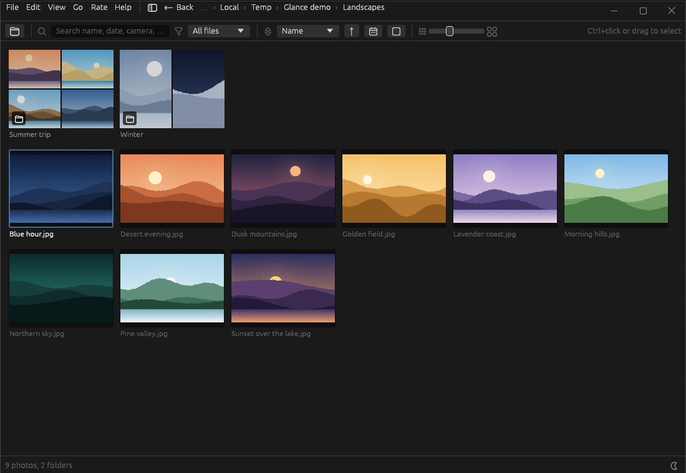
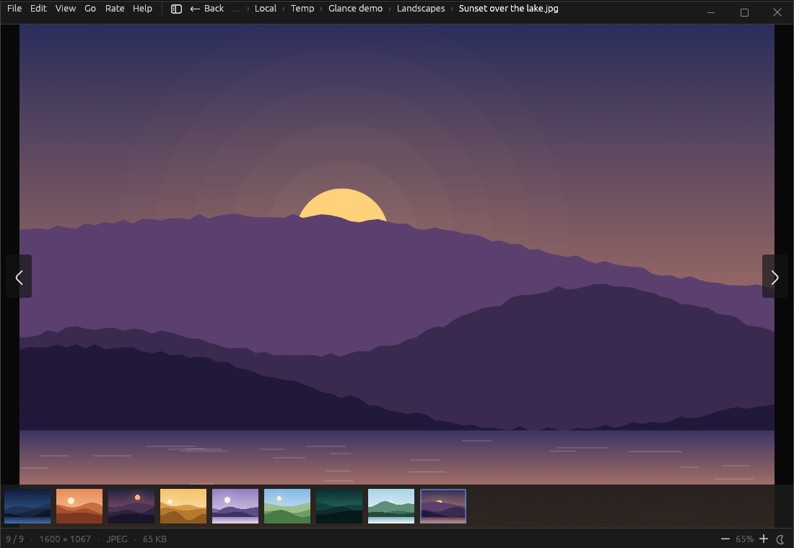

Your photos and videos, fast.
Glance is a simple photo and video viewer for Windows. Free, open source, no account and no ads.

Big, quiet viewing
Open a photo and everything else steps aside. Controls fade away while you look and come back when you move the mouse.
- Smooth zoom and panScroll to zoom, drag to look around, Ctrl+0 to fit.
- FilmstripThe rest of the folder along the bottom, one click away.
- Videos tooSubtitles, speed, picture in picture, trimming, and it remembers where you stopped.
- Fullscreen and slideshowPress F for fullscreen, Space for a slideshow.

Everything you reach for
The things you do with photos every day, without opening a second app.
From your phone, no cable
Send photos and videos from any phone to your PC over your own Wi-Fi. Nothing goes through the internet.
Questions
The short answers.
Is Glance free?
Yes. No ads, no account, no trial. The source code is on GitHub.
Why does Windows warn me when I open the installer?
Glance isn't signed with a paid code-signing certificate, so Windows SmartScreen doesn't recognise it yet. Click More info, then Run anyway. Then click Yes to let it install into Program Files.
Does Glance upload my photos anywhere?
No. Glance has no account and no cloud. Receive from phone works only inside your home network while its window is open. Show on map opens OpenStreetMap in your browser with that photo's location.
How do I make Glance open my photos when I double-click them?
Setup offers to open Default apps for you. Or go to Settings > Apps > Default apps > Glance and choose it for the file types you want. In Glance you can also use Settings > Default app.
How do I update?
Download the latest Glance-Setup.exe and run it. It replaces the old version and keeps your settings, ratings and tags.
How do I uninstall?
Settings > Apps > Installed apps > Glance > Uninstall. Your photos are never touched.
I found a bug or have an idea.
Open an issue on GitHub.